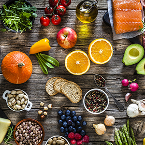
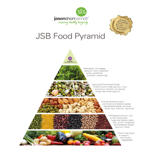
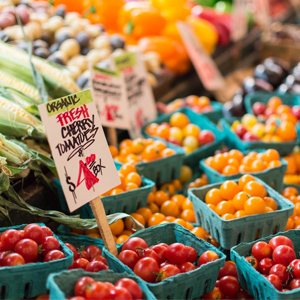

|  |
Sta je zdrava ishrana?Da li ste i koliko puta sebi postavili ovakvo pitanje? Većina, ipak o ovome ne razmišlja dok ih nužda (čitaj: bolest) na to ne natera. Stara je izreka da „zdrav bolesnom ne veruje", i zato ljudi u najvećem broju slučajeva ne razmišljaju o tome da „zdravlje na usta ulazi". Nemam nameru da ovde pišem o naučnim raspravama i dokazima za ili protiv određene vrste hrane ili načina ishrane. Ovo je moj pokušaj da pre svega naučim sebe, a možda i one koji budu čitali ovaj tekst, nekim osnovnim opšteprihvaćenim principima zdrave ishrane. Pisaću o svojim pogledima i mišljenjima na ovu temu, a verovatno će se i ta razmišljanja menjati kako vreme bude prolazilo i kako bude tekao napredak u ovom vidu mog „usavršavanja". |
Šta je uravnotežena ishrana?Na ovo pitanje, najbolji odgovor je dao još davno Hipokrat: „Sve što hranom unosimo u naš organizam gradi nas i menja, od toga zavisi naša snaga, zdravlje i život. Neka hrana bude tvoj lek, a ne lek tvoja hrana."To znači da su još u davna vremena ljudi znali da su sastojci hrane ono što može da nas učini zdravim ili bolesnim. Da ne bih previše zalazila u tako daleku prošlost , objašnjavajući kako je Hipokrat došao do tog zaključka (nije poenta u prošlosti nego u našoj budućnosti), reći ću samo da je savremena medicina takođe utvrdila i potvrdila da je jedan od uzroka čovekovih bolesti upravo hrana koju jede ili ona koju ne jede. Poznato je da ni jedna namirnica pojedinačno ne sadrži u sebi sve elemente koji bi omogućili čovekovom organizmu pravilno funkcionisanje, što znači da je raznovrsna ishrana jedan od osnovnih preduslova zdrave ishrane. Problem se javlja kada treba odrediti kolika je količina tih neophodnih elemenata. Nisu svi ljudi isti, nije svakom potrebna ista količina hrane, nemamo svi isti metabolizam, ne živimo svi istim načinom života... Preteranim unosom pojedinih namirnica, ili suprotno, neunošenjem potrebnih namirnica, trujemo svoj organizam, uništavamo telo (a samim tim uništavamo i svoj duh), skraćujemo mu vreme trajanja, odnosno život. |
 |
|  |
U organskom je budućnostDanas gotovo da i nema potrebe naglašavati vrednost organske hrane. Šta vrede i najzdravije namirnice, ako su višestruko zagađene. Onima koji se zdravije hrane i čiji su svakodnevni osnov ishrane žitarice i mahunarke, veoma je bitno da mogu da ih nađu u organskom obliku. Upravo zbog toga je veleprodaja Beyonda odlučila da se orijentiše u ovom pravcu i prva počela da sistematski snabdeva srpsko tržište sertifikovanim organskim namirnicama. Tako su zahvaljujući upravo Beyondu ljubitelji zdravije ishrane konačno mogli da po povoljnim cenama, u svojim prodavnicama zdravije hrane nabave gotovo sve žitarice i mahunarke koje se koriste u svakodnevnoj ishrani pa čak i one “egzotičnije” - kinou (specijalnu staru vrstu žitarica), azuki, mung i sl., ali i veoma zdrava organska ulja od kokosa i palme. Uz to, mi smo prvi na našem tržištu počeli da distribuiramo komplet Neera dijete, stare havajske formule koja se koristi za pročišćavanje i detoksikaciju organizma i za veoma brzo, bezbedno i efikasno regulisanje težine |